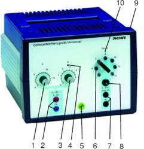
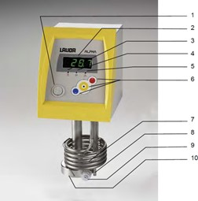
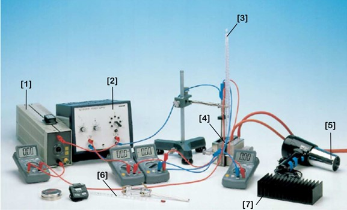

3 Experiment
Your assignment is to investigate the thermoelectric effects – Seebeck and Peltier – and write a lab report on your findings. You will be required to come up with your own experiment. However, it is recommended to follow through the guided exploration below first.
The experiment has two parts: the heat engine (Seebeck) and heat pump (Peltier).
This experiment uses the following equipment:
Peltier device
Alpha immersion thermostat w/ thermal bath
Two thermometers
4 multimeters
A power supply capable of running 0V → 18V DC (max current 5A) and stepped-down 2V → 15V AC voltage (max current 5A) simultaneously
A variable resistor (0Ω → 33Ω)
A basic resistor breadboard
Assorted resistors: (1.0 ± 2%) Ω, (2.0 ± 2%) Ω, (5.0 ± 5%) Ω, and (10.0 ± 2%) Ω
Cables
3.1 Power supply

(DC) Voltage adjustment knob
- Output
(DC) Current limiter knob
Indicator light - operating at maxi- mum limited current
Earthed lead
(AC) Selection of voltage step
(AC) Output
(AC) Overload circuit breaker
On/off switch and fuse holder
Operation indicator light
The DC output of the power supply must only be used as an input for the Peltier Device. The AC output of the power supply must only be used as an input for the heating coil (maximum 4 V). To change the AC output, use the rheostat to change the reistance according to \(V=IR%\).
3.2 Alpha immersion thermostat

Power Switch
Temperature controller with four segment LED display
Heater indicator light (yellow LED)
Cooler indicator light (blue LED)
Error indicator light (red LED)
Menu functions, select and enter keys
Tubular heater
Temperature probe Pt100
Pump outflow or pressure outlet with pump outflow reducer
Pump housing
Because the thermostat is used as the hot reservoir (up to 80°C), please exercise caution to avoid burning yourself. Wear the provided gloves if handling any of the heated-up equipment.
3.3 Peltier Experiment Apparatus

Variable resistor
Power supply
Thermometer (slots into Peltier device holes)
Peltier device (Thermoelectric device)
Blower
Second thermometer (can sit in reservoir of still water)
Heat sink
To keep yourself safe and the equipment undamaged, please consult with the tutors before turning on any of the equipment.